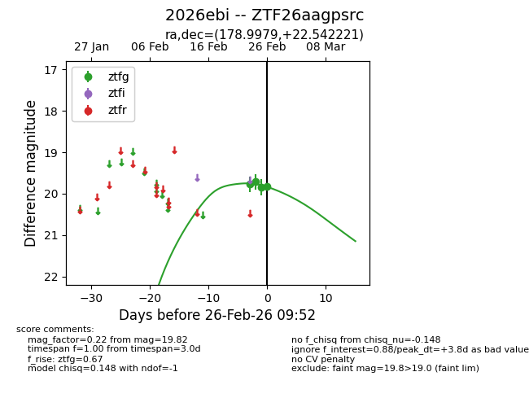
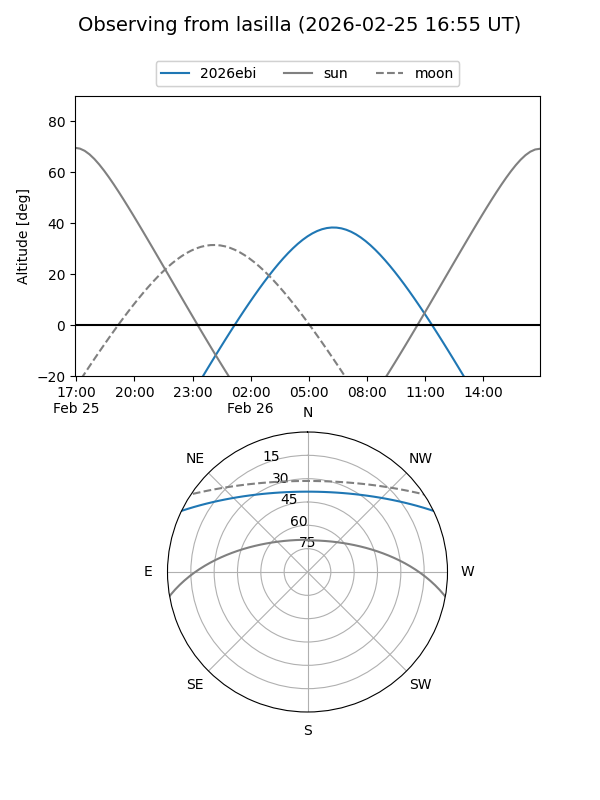
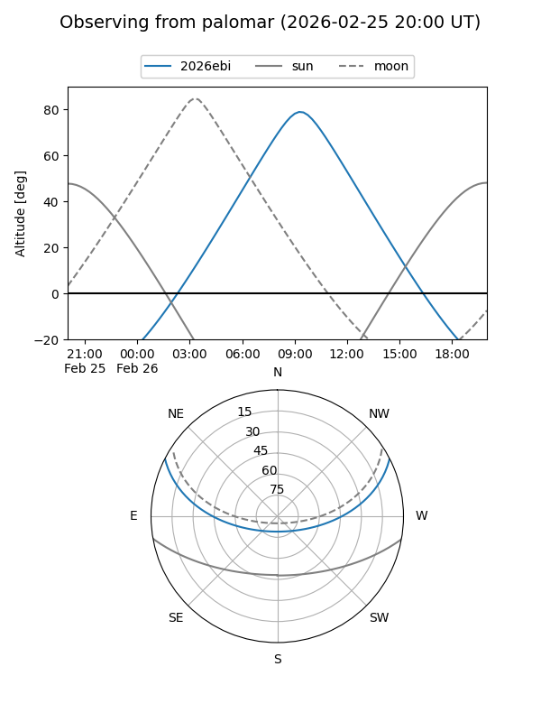
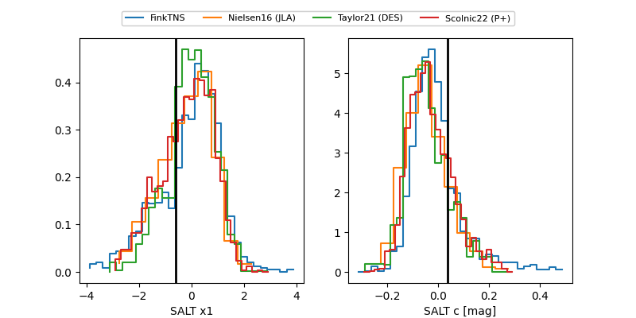

2026ebi
Target 2026ebi at 2026-02-26 09:53
Aliases and brokers:
FINK: link
Lasair: link
ALeRCE: link
TNS: link
YSE: link
alt names
ZTF26aagpsrc (ztf,fink_ztf)
2026ebi (tns,yse)
Coordinates:
equatorial (ra, dec) = 178.9979,+22.54222
equatorial (HMS+DMS) = 11:55:59.50,+22:32:32.00
galactic (l, b) = (229.9417,+76.62081)
Flags:
Photometry:
last ztfg=19.82
4 ztfg detections
Lightcurve

Visibility


Additional plots
